①、以”systemadmin”用户创建连接成功后，可以创建数据库，选中”数据库”节点，右键弹出菜单，如图：
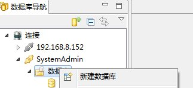
②、单击新建数据库，填写数据库名和备注，点击确定，如图：
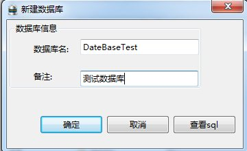
③、单击查看SQL可以查看创建数据库的SQL语句，单击复制可以对SQL语句进行复制，如图：
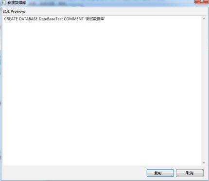
④、 成功创建数据库后，左侧树节点增加数据库实例，如图：
①、右键单击数据库实例节点，出现删除菜单。如图
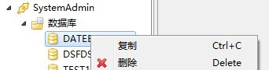
②、点击删除弹出如图所示的对话框。
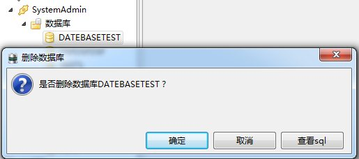
③、点击查看SQL，出现如图所示的对话框，可以查看删除数据库的SQL语句，单击复制可以对SQL语句进行复制。
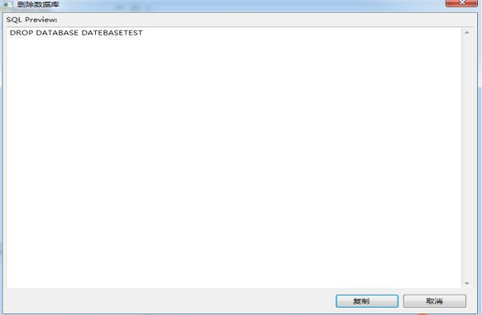
④、点击确定按钮，删除数据库成功后该节点消失如下图：
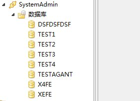
①、右键单击数据库实例节点，出现复制菜单。如图
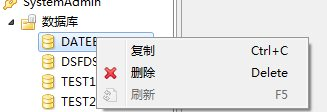
②、点击复制，数据表名则复制到系统粘贴板上
在数据库节点右键，点击刷新，重新加载导航树。如图
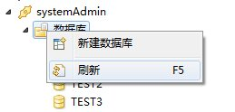
①、在数据库节点右键，点击进程组管理。如图
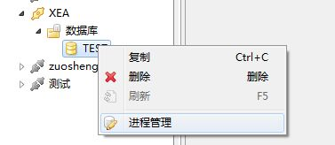
②、选择要分配的进程组。如图
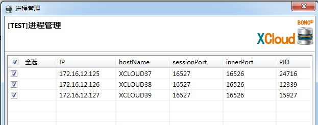